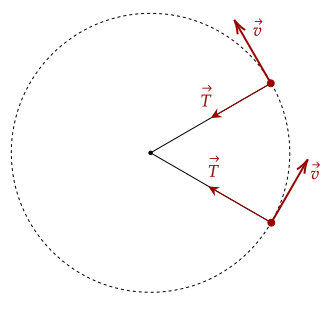
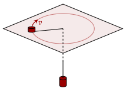
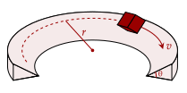
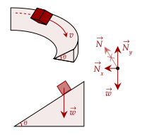
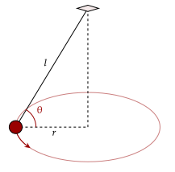
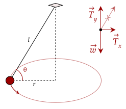
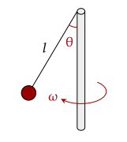

To conclude our introduction to dynamics, we end on the where we ended in kinematics as well, by revisiting circular motion.
We noted before that circular motion may have constant speed, but has changing velocity as the direction of velocity changes. Thus, there is an acceleration, which we computed to be the following.
Given there is an acceleration, there must be a force acting on it. Since we called this acceleration the centripetal acceleration, we call this force like it.
Unlike the forces we noted, like weight, the normal force, tension, or friction, the centripetal force isn't a "new force" but just a new name for the other forces we discussed. For example, when we swing a rock on a rope, the tension acts as the centripetal force.

From the Law of Acceleration, we can get the force given the acceleration. We have the acceleration, so we can get the force quite easily.
This is just the equation for the centripetal force given the constant speed, mass, and the radius.
(LSM P6.65a) A 22.0-kg child is riding a playground merrygo-round that is rotating at 40.0 rev/min. What centripetal force is exerted if he is 1.25 m from its center?
We first convert the 40.0 rev/min to rad/s, as that is the units that we need.
Now, we use our formula.
(HRK E5.39) A disk of mass on a frictionless table is attached to a hanging cylinder of mass by a cord through a hole in the table. Find the speed with which the disk must move in a circle of radius for the cylinder to stay at rest.

The two are connected by an inextensible string. We first analyze the more massive object, which the forces acting on it is the mass and the tension. To keep it at rest, its acceleration should be zero.
Now, there is a net force acting on the mass on the table, being the force that causes the centripetal acceleration. Looking at it, this force must be the tension. We substitute in our values for the centripetal force and the tension.
The centripetal force is sometimes less obvious. For example, forces at an angle can be decomposed to get the vertical and the horizontal force; and sometimes, the horizontal force is the centripetal force.
You may have seen roads that have a banking. These roads are angled in such a way that you can traverse them if you go at the correct speed. What is the centripetal force here, causing you to turn?
(HRK E5.34a) A circular curve of highway is designed for traffic moving at 60 km/h. If the radius of the curve is 150 m, what is the correct angle of banking of the road?

We find the centripetal force. Looking at the figure, it is on an inclined plane. Thus, the normal force is at an incline as well. This normal force has a horizontal component. This horizontal component points towards the center; this is the centripetal force.

Unlike the inclined plane problems we analyzed, the vertical acceleration must be zero (since we don't move up or down), so instead of decomposing the weight, we decompose the normal force instead.
Now, we analyze the horizontal component, which is the centripetal force.
We substitute the above for the normal force.
Substituting in the values we have, we get that the angle of the curve should be 10°. Note that 60km/h is 16.67m/s.
This banking helps us to traverse roads without friction. Recall that friction resists the relative motion of the object.
Imagine biking on a flat road. When you need to turn, you lean. As you lean, the wheels grip onto the floor because of friction. This friction points towards the center, becoming the centripetal force.
On a flat icy road, without friction, the wheels have nothing to stop them from slipping until you fall over. If you manage to catch yourself, you'll find that you'll keep moving in a straight line.
(HRK E5.34b) Refer to the previous exercise. If the curve were not banked, what would be the minimum coefficient of friction between tires and road that would keep traffic from skidding at this speed?
Since the curve isn't banked anymore, friction (specifically static friction, since it keeps the wheels at rest relative to the ground) is the centripetal force.
Plugging in our values, we get that the coefficient of friction has to be about 0.19.
(HRK Q5.7) What is the purpose of curved surfaces, called spoilers, placed on the rear of sports cars? They are designed so that air flowing past exerts a downward force.
Exerting a downward force allows the car to move faster along curves as it increases the normal force, thereby increasing the maximum amount of static friction that can oppose slipping.
The problem below examines a conical pendulum, where a mass is attached to a string and made to spin in a circle.
(HRK E5.39a) A conical pendulum is formed by attaching a 53-g pebble to a 1.4-m string. The pebble swings around in a circle of radius 25 cm. What is the speed of the pebble?

The first thing we need to do is find the centripetal force. Seeing the string, there is tension at an angle. The horizontal tension must be the centripetal force, while the vertical tension keeps the mass staying at the same height.

We get the vertical tension first. Since the mass isn't going up or down, the net force must be zero.
Now, we need the horizontal tension. The easiest way to get this is via using trigonometry. We first need the angle formed by the string and the radius, which is given by the length of the string and the radius.
We set up the trigonometry. The vertical tension and the horizontal tension are the opposite and the adjacent sides respectively.
Now, since this horizontal tension is the centripetal force, we substitute it into this equation.
Once we input all our values, we get that the speed of the object is 0.67m/s.
(LSM P11.97a) A small ball is attached by a massless string to a vertical rod. When the rod has an angular velocity of 6.0 rad/s, the string makes an angle 30° of with respect to the vertical. If the angular velocity is increased to 10.0 rad/s, what is the new angle of the string?

The tension in the string causes the ball to stay at the same height and spin around in a circle. The ball being at the same height means that no acceleration occurs, thus the net force in the vertical direction is zero.
We rewrite the vertical tension. Looking at the diagram, we see that the vertical tension is adjacent to the 30° angle, with the hypotenuse being the tension.
The horizontal tension is the opposite side of the angle. Thus, we use sine. This is the centripetal force.
What exactly are we solving here? Looking at the equation, the only thing we don't know is the radius, so we solve for that and see what we can do later.
While it is good we have this equation, the radius isn't really a useful thing to have. Something that is useful is the length of the string, since that will stay constant. Using trigonometry, the length is the hypotenuse, and the radius is the opposite side, so we use sine.
We will solve for this value, giving us the length of the string is about 0.32m.
Since this is constant, we can rearrange this equation to get theta. Afterwards, we can just substitute in to get the value of theta for any speed.
Substituting this in, we get that the angle is 72°.
Fun fact about this problem; this problem is suggested to be solved using angular momenta, which is a topic we won't discuss for quite some time. However, we have shown how to solve it using dynamics only.
(LSM P11.97c) Can the rod spin fast enough so that the ball is horizontal?
For it to be horizontal, the angle must be 90°. From our previous solution, we got the angle based on the angular velocity to be this equation.
If the angle is 90°, that means the cosine of that angle must equal 0.
This leaves us with a problem, however. Since the length is computed to be 0.32m, and the gravity certainly isn't zero, the angular velocity must bring the equation to zero. To get it to zero, the angular velocity must be ∞ m/s, which is impossible.
Thus, the answer is it no; it is impossible.
One caveat of the fact that the Earth spins is that people near the equator actually appear to have less weight than those on the poles. Of course, they still have the same weight, its just that the scales we use don't take this centripetal force into account.

This centripetal force is actually quite minuscule compared to the weight we have.
(HRK E5.47b) Assume that the standard kilogram would weigh exactly 9.80 N at sea level on the equator if the Earth did not rotate. Then take into account the fact that the Earth does rotate, so that this object moves in a circle of radius 6370 km (the Earth’s radius) in one day. Find the measure of the standard kilogram on a scale located at the equator.
Recall the equation for the centripetal acceleration given the radius and period.
Thus, the centripetal force is then this.
There are two forces acting on the kilogram, being the normal and the weight. However, the net force must be the centripetal force to keep the object moving in a circle. The weight is the one acting as the centripetal force, so we set it as positive and the normal as negative.
Since we know the weight is 9.80N, we just solve for the centripetal force and find that it is around 0.0337N. Thus, the recorded weight will be 9.77N.